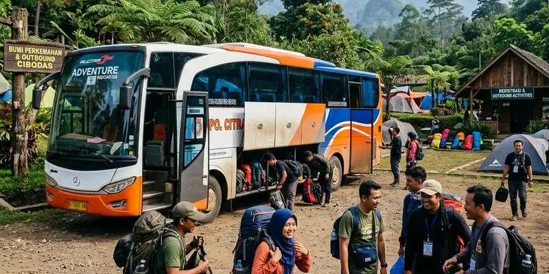

Komponen biaya outbound perusahaan mencakup transportasi, akomodasi, konsumsi, fasilitator, perlengkapan aktivitas, dokumentasi, dan dana cadangan yang bersama-sama membentuk total anggaran outbound.
Ringkasan Inti
- Transportasi dan akomodasi umumnya menjadi porsi anggaran yang cukup besar.
- Fasilitator outbound memengaruhi kualitas pelaksanaan aktivitas di lapangan.
- Perlengkapan aktivitas perlu disesuaikan dengan jumlah peserta dan jenis permainan.
- Dana cadangan penting untuk mengantisipasi kebutuhan mendadak.
- Rincian biaya yang jelas mempermudah proses persetujuan anggaran oleh atasan.
Secara umum, komposisi anggaran outbound dapat berbeda-beda antar perusahaan tergantung lokasi kegiatan, jarak tempuh, dan jenis aktivitas yang dipilih, sehingga penting untuk menyusun rincian biaya berdasarkan kebutuhan aktual, bukan asumsi umum semata.
Apa Saja Komponen Biaya Utama dalam Outbound Perusahaan?
Komponen biaya utama dalam outbound perusahaan terdiri dari transportasi, akomodasi, konsumsi, fasilitator, perlengkapan aktivitas, dokumentasi, dan dana cadangan.
Transportasi
Transportasi mencakup biaya sewa bus, mobil, atau kendaraan lain untuk mengantarkan peserta ke lokasi outbound dan kembali ke titik penjemputan awal. Biaya ini dipengaruhi oleh jarak tempuh, jumlah kendaraan, dan jenis armada yang digunakan.
Akomodasi
Akomodasi diperlukan apabila kegiatan outbound berlangsung lebih dari satu hari. Biaya ini mencakup sewa kamar atau tenda, serta fasilitas penunjang seperti aula pertemuan bila diperlukan untuk sesi indoor.
Konsumsi
Konsumsi mencakup biaya makan utama, camilan, dan minuman selama kegiatan berlangsung. Jumlah dan jenis menu biasanya disesuaikan dengan durasi acara dan preferensi peserta.
Fasilitator Outbound
Fasilitator outbound adalah instruktur yang memandu permainan dan aktivitas team building. Biaya fasilitator umumnya dihitung berdasarkan jumlah instruktur yang dibutuhkan sesuai rasio jumlah peserta.
Perlengkapan Aktivitas
Perlengkapan aktivitas mencakup alat permainan, properti, serta perlengkapan keselamatan seperti tali pengaman untuk aktivitas yang melibatkan ketinggian atau fisik tertentu.
Dokumentasi
Dokumentasi mencakup jasa fotografer atau videografer untuk mengabadikan momen kegiatan, yang biasanya digunakan sebagai bahan laporan maupun publikasi internal perusahaan.
Dana Cadangan
Dana cadangan disiapkan untuk mengantisipasi kebutuhan mendadak, seperti perubahan cuaca, tambahan peserta, atau kebutuhan logistik lain yang tidak terduga sebelumnya.

Biaya transportasi, seperti penyewaan bus pariwisata, biasanya menempati porsi yang cukup besar dalam RAB kegiatan outbound perusahaan.
Bagaimana Cara Menghitung Estimasi Biaya per Peserta?
Estimasi biaya per peserta dihitung dengan menjumlahkan seluruh komponen biaya kegiatan lalu membaginya dengan jumlah total peserta yang mengikuti acara.
Cara ini membantu tim penyelenggara menentukan harga per kepala yang kemudian dapat dibandingkan dengan alokasi anggaran per karyawan yang telah ditetapkan perusahaan. Perhitungan per peserta juga memudahkan proses penyesuaian bila terjadi perubahan jumlah peserta mendekati hari pelaksanaan.
Komponen Mana yang Paling Sering Menyebabkan Pembengkakan Anggaran?
Transportasi dan konsumsi sering menjadi komponen yang paling sering menyebabkan pembengkakan anggaran karena harganya dapat berubah mendekati hari pelaksanaan, terutama saat musim ramai kegiatan outbound.
Selain itu, perubahan jumlah peserta di menit-menit akhir juga kerap memengaruhi biaya konsumsi dan transportasi secara signifikan, sehingga penting untuk menetapkan batas akhir konfirmasi peserta jauh sebelum hari pelaksanaan.
Tips Mengelola Komponen Biaya agar Tetap Terkendali
Komponen biaya outbound dapat dikelola agar tetap terkendali dengan menetapkan batas maksimal per pos anggaran dan memantau realisasi biaya secara berkala.
- Tetapkan batas maksimal untuk setiap komponen biaya sejak awal perencanaan.
- Mintalah rincian harga tertulis dari vendor, termasuk vendor Gemilang Katun Outbound, untuk setiap item biaya.
- Lakukan pemantauan realisasi biaya secara berkala menjelang hari pelaksanaan.
- Siapkan opsi alternatif komponen biaya bila terjadi kenaikan harga mendadak.
Kesimpulan
Memahami komponen biaya outbound perusahaan secara rinci membantu tim penyelenggara menyusun anggaran yang lebih akurat dan realistis. Untuk panduan lengkap penyusunan anggaran, baca cara menyusun anggaran outbound corporate gathering, dan pelajari juga tips memilih vendor outbound terpercaya.
FAQ Seputar Komponen Biaya Outbound
Komponen biaya utama outbound perusahaan meliputi transportasi, akomodasi, konsumsi, fasilitator, perlengkapan aktivitas, dokumentasi, dan dana cadangan.
Dana cadangan sebaiknya disesuaikan dengan skala kegiatan dan dapat dikonsultasikan dengan vendor penyelenggara agar sesuai kebutuhan aktual acara.
Fasilitator outbound termasuk komponen penting karena berperan memandu jalannya aktivitas dan memastikan keselamatan peserta selama kegiatan berlangsung.